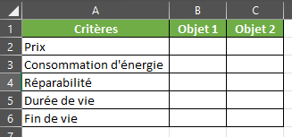
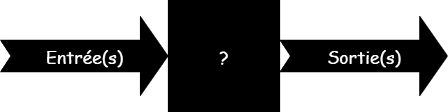
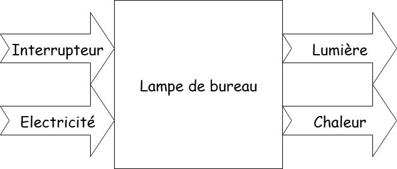

Calendrier Technologie 5ème - 2025/2026
| Date | Cours | Date | Cours |
|---|
Accueil : Règles, prise en main et sécurité numérique
1. Accueil et mise en place
- Disposition en binômes fixes (pour l’année).
- Présentation rapide : “Cette année, vous allez surtout faire : modéliser, programmer, tester, créer des projets utiles au collège.”
2. Découverte et règles du labo numérique
- Identifier les éléments de la salle (ordinateurs, imprimante 3D si dispo, rangements, extincteur, prises, tableau).
- Discussion rapide : “Quels risques possibles ici ?” (chute, câble, matériel fragile, données…).
3. Prise en main des postes
- Allumer les ordinateurs et se connecter
- Télécharger le document modèle avec le lien suivant : Document à télécharger
- Renommez le comme suit : presentation_nom_prenom
-
Ouvrez le et remplissez le avec les infos suivantes:
- Nom
- Prénom
- Hobby / Passions
- Ce que vous voudriez faire comme études
- Où vous voulez faire vos études
- Ce que vous voudriez faire comme métiers plus tard
- Pourquoi faire ce métiers
-
Copiez le dans le drive de la classe à l'adresse suivante (directement depuis l'ordinateur) :
\Espace d'échange\Techno - Changez de poste et vérifiez que votre fichier s'y trouve
4. Quiz sécurité & RGPD
- Peut-on donner son mot de passe à son ami ?
- Que faire si on reçoit un mail bizarre avec une pièce jointe ?
- Quelles infos sont “données personnelles” ? (nom, photo, adresse, notes scolaires)
- Ai-je le droit de publier la photo d’un camarade sans son accord ?
- Pourquoi faut-il verrouiller sa session ?
- Si l’ordi bugge, que dois-je faire ?
- Que veut dire “RGPD” ? (Réponse simplifiée : loi européenne qui protège nos données).
- Exemple concret : choisir un bon mot de passe (fort vs faible).
5. Clôture et trace écrite
- Résumer des points-clés :
- Règles du labo.
- Identifiants personnels
- RGPD
- Créer une fiche mémo (à mettre dans le drive partagé, nommé "nom_prenom_memo") avec :
- 3 règles de sécurité labo.
- 2 règles RGPD.
- 1 mot de passe solide qui, selon vous, est fort.
Diagnostic CRCN + organisation en binômes, découverte du portfolio numérique
1. Mise en route
-
Rendez-vous sur le site suivant :
Wooclap - Une dernière question : As-tu déjà créé un document en ligne collaboratif ?
2. Diagnostic CRCN individuel
Comme vous êtes en binomes, vous allez faire le diagnostic CRCN chacun de votre côté (15-20 min).
Un élève depuis son smartphone, l'autre depuis l'ordinateur.
Ou bien via le lien suivant : Quiziniere - Diagnostic CRCN
3. Découverte du portfolio numérique
Le portfolio est notre mémoire numérique : il servira à archiver vos projets, vos tests, vos comptes rendus et vos réussites tout au long de l’année. À la fin, il montrera vos progrès et vous servira pour valider vos compétences CRCN.
Dans votre dossier partagé sur le réseaux du lycée :
-
Créez un dossier commun
- Nommez le : "Portfolio Techno 5e - [Nom de binôme]"
- Vous pouvez utiliser vos 2 prénoms, vos 2 noms, un nom d'équipe (ex : équipe pluton), etc...
-
Ajouter un document collaboratif dans ce dossier
- Nommez le fichier : "Carnet de bord S0"
- Dans ce document, écrire la phrase d'introduction : "Nous sommes [prénoms] et notre défi sera de travailler en équipe toute l’année !"
-
Insérer une ressource externe
- Chaque binôme cherche une image libre de droits (Pixabay, Unsplash, Pexels).
- L’image doit représenter un objet technique ou un mot-clé de la séance (énergie, numérique, robot, école…).
- Ils la glissent dans leur dossier portfolio.
-
Faire une capture d’écran
- Faites une capture d’écran de votre dossier portfolio et collez-la dans le carnet de bord.
- Si nécessaire, utilisez la combinaison de touches (Windows : Win + Shift + S, Mac : Cmd + Shift + 4).
S'il vous reste du temps, chaque binôme choisit un emoji ou une icône comme “logo d’équipe” qu’il place en première page de son carnet de bord.
Chaque binôme doit avoir en fin de séance :
- un dossier Portfolio "Techno 5e – [Nom du binôme]"
-
un fichier "Carnet de bord S0" contenant :
- la phrase d’introduction
- une image libre de droits
- une capture d’écran du portfolio
Inventaire d’objets du collège
Compétences visées :
- Identifier la fonction d’usage d’un objet technique.
- Relier un objet technique aux besoins et aux usagers.
- Décrire simplement un système technique par ses fonctions principales.
- Travailler en groupe et collaborer avec des outils numériques.
Objectifs pédagogiques
- Comprendre que tout objet technique existe pour répondre à un besoin humain.
- Savoir distinguer usager, besoin, fonction d’usage.
- Produire un inventaire collaboratif d’objets du collège en utilisant un outil numérique partagé.
1. Mise en situation
"Si demain on devait construire un nouveau collège, quels objets faudrait-il absolument prévoir pour bien fonctionner ?"
Au tableau, introduire les notions suivantes :
- Besoin : le besoin auquel réponds l'objet
- Usager : qui en profite, l'utilise
- Fonction d’usage : action rendue par l’objet pour répondre au besoin → exemple : une chaise → permet de s’asseoir.
2. Activité pratique par binômes
Télécharger le document suivant : Objets_collège.ods (format LibreOffice)
Consigne :
-
En binôme, vous allez recenser 3 objets du collège. Pour chacun, vous devez indiquer :
- Nom de l’objet
- Besoin auquel il répond
- Qui est l’usager principal
- Fonction d’usage (ce que l’objet permet de faire)
- Que se passerait-il si cet objet n’existait pas ?
3. Mise en commun
- Définir un élève-secrétaire pour alimenter une grande fiche de synthèse (fichier Calc)
- Chaque binôme présente 1 objet marquant à la classe (rapide pitch de 1 min)
-
Discussion guidée :
- Quels besoins sont les plus souvent cités ?
- Y a-t-il des objets spécifiques aux profs ? Aux élèves ? Aux agents techniques ?
- Peut-on classer les objets selon leur fonction (se nourrir, apprendre, se déplacer, sécurité, confort) ?
S'il reste du temps :
- Jeu “Objet mystère” : un élève décrit le besoin et la fonction → les autres devinent l’objet.
- Défi express : trouver un objet du collège qui a plusieurs usagers différents (ex. ordinateur → prof pour préparer cours, élève pour apprendre, agent pour maintenance).
- Pour les plus rapides : comparer deux objets qui répondent au même besoin (ex. tableau blanc / vidéoprojecteur).
4. Conclusion
Un objet technique est créé par l’homme pour répondre à un besoin. Il est utilisé par un ou plusieurs usagers et remplit une fonction d’usage. Dans le collège, on trouve de nombreux objets techniques qui facilitent la vie quotidienne et l’apprentissage.
Cycle de vie d’un objet (ACV simplifiée) et critères de choix
L'Analyse de cycle de vie (ACV) est une méthode d'évaluation visant à quantifier les impacts environnementaux d'un produit ou d'un service, dans un objectif d'éco-conception ou pour choisir parmi plusieurs produits ou services le plus performant.
Compétences visées :
- Identifier les étapes principales du cycle de vie d’un objet technique.
- Relier un objet à ses impacts (énergie, matières, déchets).
- Utiliser des critères de choix simples (prix, réparabilité, énergie).
- Coopérer et argumenter dans un débat/activité.
Objectifs pédagogiques
- Comprendre que chaque objet a une “vie” depuis sa fabrication jusqu’à son recyclage.
- Découvrir que nos choix d’objets influencent l’environnement, l’économie et la société.
- Savoir analyser et comparer 2 objets similaires avec des critères simples.
1. Accroche & découverte
Vidéo Youtube : Life of a Plastic Bottle
-
Questions :
- Que s’est-il passé AVANT que je boive cette eau ?
- Que va-t-il se passer APRÈS ?
En fait, un objet technique comme cette bouteille a une vie. On appelle cela le cycle de vie. On le représente en 5 étapes.
-
Introduction des notions de cycle de vie (simplifié en 5 étapes) :
- Matières premières
- Fabrication
- Transport/distribution
- Utilisation
- Fin de vie (réemploi, recyclage, déchets)
Mini-activité ludique
Avec un objet du quotidient (stylo, canette, cahier, ...).
Qui peut raconter son cycle de vie ?
2. Activité pratique par groupes
Étape A – Fichier à compléter
- Chosir un objet parmi les objets suivant : smartphone, chaise en plastique, vêtement, ampoule LED, ordinateur portable, trotinette électrique
- Téléchargez le document suivant : cycle_vie_objet.ods
- En vous basant sur l'exemple de la bouteille en plastique, remplir le document
- Enregistrez le dans votre dossier partagé
-
Bonus ludique :
- Dessine un pictogramme par étape (ex. une mine pour matières, une usine pour fabrication, un camion pour transport).
- Imagine ce qui se passerait si ton objet disparaissait demain : quelles solutions trouverions-nous pour remplacer son usage ?
Étape B – Comparaison de deux objets
Objectif :
Savoir analyser et comparer deux objets techniques en utilisant des critères simples pour comprendre pourquoi un choix peut être plus durable qu’un autre.
-
Chaque groupe se met avec un autre groupe, puis vous devez chosir une paire d'objets à comparer parmi les suivantes :
- Ampoule à incandescence 💡 vs Ampoule LED 💡
- Ordinateur neuf 💻 vs Ordinateur reconditionné ♻️
- Vélo classique 🚲 vs Trottinette électrique 🛴
- Bouteille plastique 🥤 vs Gourde en métal 🥤
-
Créez un document LibreOffice Calc et remplissez le avec les colonnes suivantes :
- Critères
- Objet 1
- Objet 2
-
Puis avec les lignes suivantes :
- Prix
- Consommation d'énergie
- Réparabilité
- Durée de vie
- Fin de vie
 - Chaque groupe présente son duo d’objets et le critère le plus marquant, cette comparaison sera sous forme de “Conseil d’achat du collège” → chaque groupe doit convaincre la classe que son objet est le meilleur choix pour équiper l’établissement.
- Défi rapide : citer un objet du quotidien et imaginer une amélioration pour réduire son impact (ex. chaussures réparables, gourde personnalisable).
3. Conclusion
Trace écrite (simplifiée)
« Tout objet technique a un cycle de vie : matières premières, fabrication, transport, utilisation, fin de vie.
Pour choisir entre deux objets, on peut comparer plusieurs critères : prix, énergie, réparabilité, durée de vie, recyclage.
Un choix raisonné permet de limiter l’impact sur l’environnement et de favoriser le développement durable. »
Comparaison d’OST – tableau de critères & scénario d’usage raisonné
Compétences visées
- Identifier et hiérarchiser des critères de choix d’un objet technique.
- Comparer plusieurs solutions à partir d’un tableau de critères.
- Décrire un scénario d’usage raisonné (choix argumenté et adapté au contexte).
- Travailler en groupe et argumenter ses choix.
1. Accroche
Que pouvez-vous me dire sur les deux objets suivants ?
- Bouteille plastique
- Gourde en métal
2. Activité pratique en groupes
Étape A – Tableau comparatif
-
Chaque groupe choisi 2 ou 3 objets OST à comparer.
- Vélo classique vs Trottinette électrique
- Cahier papier vs Tablette numérique
- Ampoule LED vs Ampoule fluocompacte* vs Ampoule incandescente
- Clé USB vs Cloud * L'ampoule fluorescente compacte ou ampoule fluocompacte est une ampoule constituée d'un tube contenant de l'argon et de la vapeur de mercure. Ces deux composants produisent de la lumière UV invisible lorsqu'ils sont traversés par le courant électrique.
- Prix à l’achat
- Consommation d’énergie
- Impact environnemental (déchets, recyclage)
- Durée de vie
- Facilité d’utilisation
- Réparabilité / maintenance
-
Exemples possibles (au choix)
-
Critères à compléter par les élèves :
| Critères | Objet A (ex. Gourde métal) | Objet B (ex. Bouteille plastique) |
| Prix à l’achat | Élevé à l’achat (10€) | Faible (0,5€) |
| Consommation d’énergie | Pour la fabrication, élevè, pour le recyclage, très élevè | Pour la fabrication, élevè, pour le recyclage, très élevè |
| Impact environnemental | Recyclable, peu de déchets | Recyclable, beaucoup de déchets plastiques |
| Durée de vie | Plusieurs années | Usage limité |
| Facilité d'usage | Réutilisable, à nettoyer | Pratique, jetable |
| Réparabilité / Maintenance | Non (mais solide) | Non |
Étape B – Scénario d’usage raisonné
Chaque groupe doit imaginer un scénario d’usage pour son objet, en répondant aux questions suivantes :
- Dans quel contexte cet objet sera-t-il utilisé ? (école, maison, transport...)
- Qui sont les usagers principaux ? (élèves, professeurs, personnel...)
- Quels sont les besoins spécifiques à ce contexte ? (mobilité, stockage, éclairage...)
- Pourquoi cet objet est-il le meilleur choix dans ce contexte ? (avantages par rapport aux autres solutions)
« Nous choisissons la gourde en métal pour les élèves car même si elle coûte plus cher à l’achat, elle dure plusieurs années et réduit les déchets plastiques. C’est un choix plus durable pour l’environnement et le collège. »
3. Mise en commun
- Chaque groupe lit son scénario d’usage raisonné.
- Tous les critères ont-ils la même importance ?
- Peut-on dire qu’il existe un « meilleur » choix universel ?
- En quoi le contexte d’usage (argent disponible, contraintes, environnement) influence-t-il la décision ?
-
Variante ludique / différenciation :
- Débat mouvant : l’enseignant lit une affirmation (« La tablette est meilleure que le cahier papier »). Les élèves se placent physiquement à gauche/droite de la salle selon leur avis → chaque camp doit convaincre l’autre avec ses arguments.
- Jeu “Conseil municipal du collège” : chaque groupe représente un acteur différent (élève, professeur, agent, gestionnaire). Ils doivent défendre un choix d’objet en fonction de leur rôle.
Cartographie “boîte noire” – entrées / sorties d’un système simple
Compétences visées :
- Identifier les éléments d’entrée et de sortie d’un système technique.
- Représenter un système par un schéma de type boîte noire.
- Comprendre que l’intérieur (fonctionnement détaillé) n’est pas toujours nécessaire pour décrire un système.
- Travailler en groupe et communiquer une solution.
1. Accroche & découverte

« Quand vous pédalez sur un vélo, qu’est-ce qui entre dans le vélo ? Qu’est-ce qui en sort ? »
-
Réponses attendues :
- Entrées → énergie musculaire, action de pédaler, information (pilote qui dirige).
- Sorties → mouvement des roues, déplacement, bruit, lumière (si dynamo).
C'est le principe de la “boîte noire” : on ne s’intéresse pas à ce qu’il y a à l’intérieur, mais seulement à ce qui entre et ce qui sort.
Dispositif réel ou théorique dont on ignore ou veut ignorer la structure et le fonctionnement pour ne s'intéresser qu'aux fonctions qu'il remplit.
2. Activité pratique
Étape A – Exemple guidé
Prenons un exemple simple : une lampe de bureau.
- Quelles sont les entrées ? (ex. énergie électrique, interrupteur)
- Quelles sont les sorties ? (ex. lumière, chaleur)

Étape B – Mise en pratique
Choisissez un objet technique parmi une liste proposée ou dans votre environnement de classe.
-
Liste proposée :
- Ventilateur
- Micro-ondes
- Ordinateur portable
- Imprimante 3D
- Smartphone
- Machine à café
- Radiateur
-
Mission :
- Remplir un schéma de boîte noire avec au moins 3 entrées et 3 sorties.
- Dessiner ou compléter le schéma sur une feuille (ou version numérique avec un outil simple type Draw.io).
- Donner un titre clair à votre schéma, ex : « Boîte noire d’un smartphone ».
Étape C - Jeu “devine mon objet”
Un groupe lit ses entrées/sorties, les autres doivent deviner l’objet technique.
3. Mise en commun & discussion
- Quelles entrées reviennent souvent (ex. énergie électrique) ?
- Quelles sorties peuvent être positives (lumière, mouvement) ou négatives (bruit, chaleur, pollution) ?
- Pourquoi cette représentation est utile pour comparer des systèmes ?
Tinkercad – prise en main, primitives, alignement, groupage
Compétences visées :
- Utiliser un logiciel de CAO 3D en ligne.
- Manipuler des primitives géométriques (cube, cylindre, sphère, cône…).
- Réaliser des opérations simples : déplacer, redimensionner, aligner, grouper.
- Développer la créativité et la rigueur dans une activité ludique.
1. Accroche
« Savez-vous comment on fabrique un objet avec une imprimante 3D ? »
A la maison, vous regarderez comment fonctionne une imprimante 3D filament (FDM) et une imprimante 3D résine (SLA)
Avant d’imprimer, il faut modéliser en 3D. Aujourd’hui, on découvre l’outil Tinkercad.
2. Découverte guidée
- Allez sur le site suivant : Tinkercad de la classe
- Vous devez avoir accès au cours : "Intro à la modélisation 3D"
- Faire les différents tuto proposés (15 en tout, très court)
Cotation simple & contraintes – Reproduire une pièce à l’échelle
Compétences visées :
- Lire et comprendre une cotation simple (dimensions en mm).
- Utiliser les outils de mesure et de redimensionnement dans Tinkercad.
- Reproduire une pièce à l’échelle réelle à partir d’un schéma.
- Développer rigueur et précision dans la conception.
1. Accroche & découverte
Si je vous demande de modéliser un cube, comment être sûr que vous allez tous le faire de la même taille ?
Chacun choisit une taille → risque d’erreurs → introduction de la cotation.
2. Découverte guidée (pas-à-pas)
- Ajouter un cube.
- Afficher ses dimensions (poignées blanches avec valeur numérique).
- Modifier les valeurs pour obtenir exactement 30 × 20 × 10 mm. (30 de long, 20 de large, 10 de haut)
- Ajouter une deuxième forme (ex. cylindre Ø10 mm (diamètre), hauteur 20 mm).
- Vérifier les mesures avec l’outil règle de Tinkercad.
3. Activité pratique
- Retourner sur Tinkercad (Tinkercad de la classe)
- Faire l'activité : "Modélisation partie 1"
Importer une image-guide & extrusions – Créer un support de badge
Compétences visées :
- Importer et utiliser une image-guide dans un logiciel de CAO.
- Créer une forme par extrusion à partir d’un dessin.
- Concevoir un objet personnalisé et fonctionnel (support de badge).
- Développer créativité et autonomie dans un projet simple.
1. Accroche
« Comment pourrait-on créer ce badge dans Tinkercad ? »
Aujourd’hui, on va apprendre à importer une image 2D et la transformer en objet 3D.
2. Découverte guidée – Import & extrusion
- Allez sur la page suivante : Wifi SVG
- Cliquer sur "Download SVG vector"
- Retournez sur Tinkercad : Tinkercad de la classe
- Dans Tinkercad
- Créez une nouvelle conception 3D
- Cliquer sur Importer → Choisir un fichier et prenez le .svg que vous venez de télécharger
- Modifiez la taille pour qu'il fasse 30mm par 30mm
- L’image devient un volume extrudé (épaisseur par défaut).
- Ajuster la hauteur (par ex. 2 mm).
- Ajouter un rectangle de base (ex. 40 × 60 mm, épaisseur 3 mm).
- Poser le logo extrudé sur le rectangle (outil alignement).
- Ajouter un trou circulaire Ø5 mm pour l’accroche du badge.
- Grouper le tout → badge complet !
3. Activité pratique – Créer son badge
-
Étape A – Importation et extrusion
- Chaque élève choisit un logo ou des initiales à importer (recherche sur le web)
- L’importer dans Tinkercad et l’extruder à la bonne hauteur. Étape B – Support de badge
- Créer un rectangle base (taille libre, mais max. 60 mm).
- Poser le logo extrudé dessus.
- Ajouter un trou pour accroche (5 mm min).
- Grouper le tout. Étape C – Bonus créatif
- Ajouter un texte extrudé (prénom, pseudo).
- Choisir une forme originale (ovale, étoile).
- Décorer avec plusieurs logos. Étape D – Sauvegarde pour impression 3D
- Exporter en STL (bouton Exporter → .STL).
- Peut prendre un certain temps...